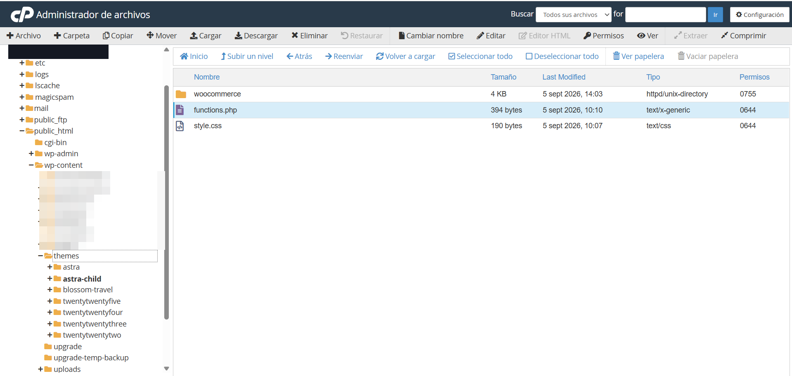
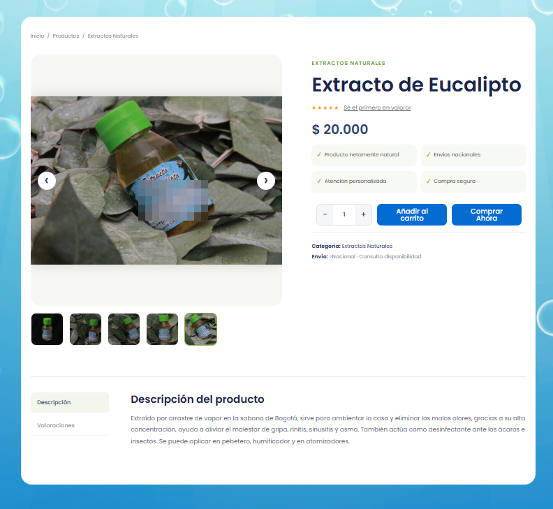
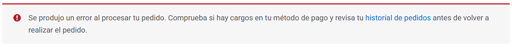
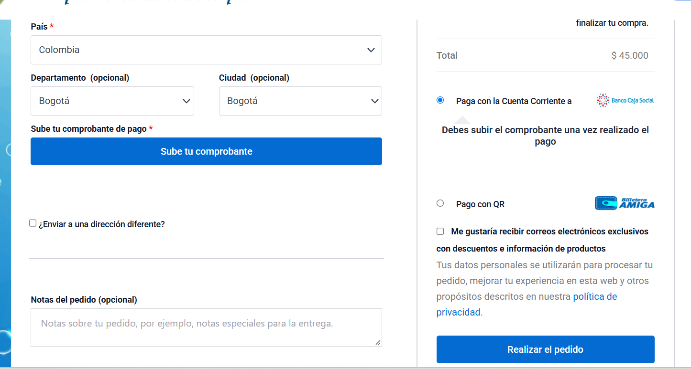
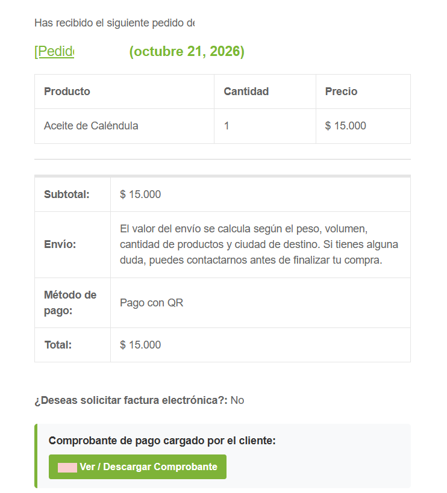
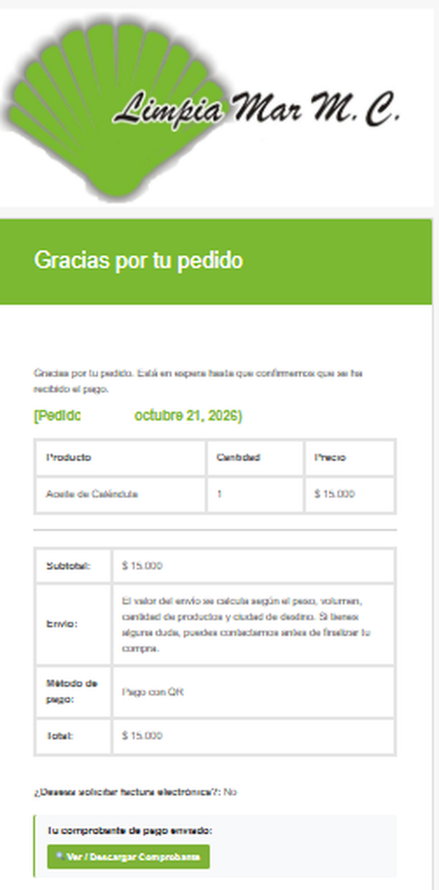
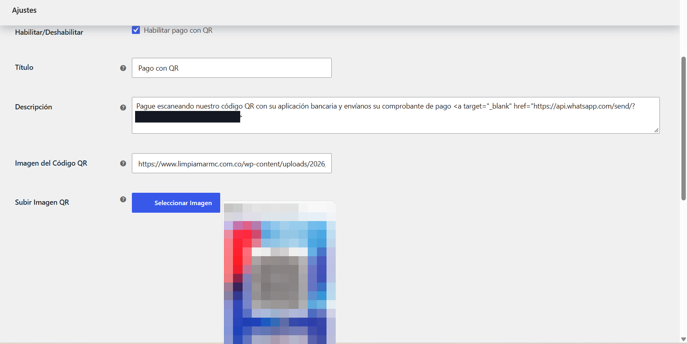
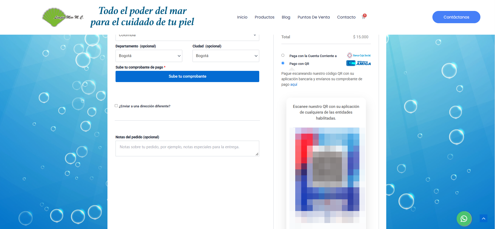
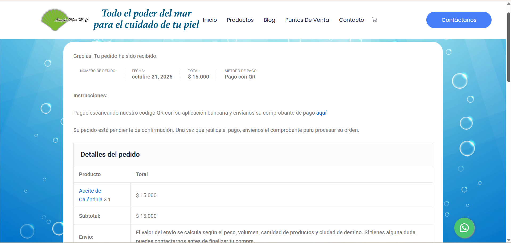

Estabilizar una tienda WooCommerce: datos, comprobantes y checkout
Diagnóstico y resolución de incidentes en una tienda que ya estaba en producción: una plantilla de producto que debía leer siempre del catálogo, un flujo de comprobantes de pago por correo, un error fatal que bloqueaba el checkout y una pasarela de pago QR desarrollada a medida.
ANTES Elementor Theme Builder → plantilla Single Product → ✕ datos que no coincidían con el producto
DESPUÉS Astra → Astra Child → woocommerce/content-single-product.php → $product (catálogo WooCommerce)
CHECKOUT Cliente → comprobante (WOOCCM) → metadato del pedido → Biblioteca multimedia
│
▼
Snippet "Comprobante de pago" → enlace en el correo del vendedor y del comprador ✓ pedido de prueba validadoUna tienda en funcionamiento que dejó de ser confiable
Limpia Mar MC vende productos naturales en línea sobre WordPress y WooCommerce, con el tema Astra. La tienda ya estaba operativa; los problemas aparecieron al actualizar el tema y los plugins.
Situación inicial
- Productos que mostraban precio, imágenes o descripción de otro producto.
- Comprobantes de pago que no llegaban al vendedor.
- Mensaje de error al procesar el pedido, con cualquier método de pago.
- Lentitud y elementos que no cargaban por falta de mantenimiento continuo.
Mi rol
Diagnóstico + arquitectura + desarrollo + pruebas. Identifiqué las causas, decidí cómo reducir la dependencia de componentes visuales, escribí el código a medida y documenté la operación.
- Diagnóstico
- Arquitectura
- PHP / WooCommerce
- Integración
- Pruebas
- Documentación
Criterio de trabajo. En cada incidente separo lo comprobado de lo supuesto. Donde no hay evidencia, este dossier lo dice: una hipótesis no se presenta como causa raíz.
Cuatro incidentes, una arquitectura más simple
Resumen de lo que pasó, qué se pudo comprobar y qué se hizo. El detalle de cada uno está en las secciones siguientes.
| Incidente | Impacto | Causa identificada | Solución |
|---|---|---|---|
| 1 · Datos del producto que no coincidían | Quejas y devoluciones (reportadas por el cliente) | Confirmado: contenido incrustado fijo en la plantilla de Elementor. Hipótesis: caché sirviendo contenido cruzado (sin evidencia) | Plantilla en tema hijo que lee el producto actual de WooCommerce |
| 2 · Comprobantes que no llegaban | El vendedor no podía verificar el pago desde el correo | Confirmado: el plugin guarda IDs de adjunto, no URLs. Las funciones avanzadas pedían licencia (reportado) | Snippet que resuelve la URL con wp_get_attachment_url() |
| 3 · Error al procesar el pedido | Pedidos no completados con ningún método de pago | Error fatal de PHP (strpos() recibió un array) en un snippet propio, según el registro de errores. No era la pasarela | Corrección de la validación de tipos y rediseño del snippet |
| 4 · Mantenimiento, rendimiento y caché | Lentitud y elementos que no cargaban (reportado) | Falta de mantenimiento continuo (reportado) | Procedimiento de actualización, purga de caché y verificación |
Desarrollo adicional: una pasarela de pago QR propia (plugin de un solo archivo) y un snippet para los iconos de los métodos de pago en el checkout.
Separar las personalizaciones del tema padre
Las personalizaciones viven en un tema hijo de Astra, en wp-content/themes/astra-child/, para que las actualizaciones del tema padre no las sobrescriban.
WordPress → Astra (tema padre) → Astra Child → WooCommerce
│
▼
woocommerce/content-single-product.php (plantilla personalizada)
│
▼
Base de datos de productos (única fuente de verdad)Qué hace cada archivo
| Archivo | Responsabilidad |
|---|---|
functions.php | Encola la hoja de estilos del tema padre y la del tema hijo (esta última depende de la del padre y usa la versión del tema como parámetro de caché). |
style.css | Encabezado del tema hijo (Template: astra). No contiene reglas propias: los estilos de la plantilla de producto están dentro de la propia plantilla, encapsulados con el prefijo .lmc-. |
woocommerce/content-single-product.php | Sobrescribe la plantilla de contenido de producto individual de WooCommerce. |
Modificar el tema padre. El cambio se pierde cuando Astra se actualiza.
Sobrescribir desde el hijo. WooCommerce busca primero la plantilla en tema-hijo/woocommerce/; el tema padre queda intacto.
Alcance real del tema hijo. Protege las personalizaciones frente a la actualización de Astra, pero no elimina la necesidad de revisar la plantilla sobrescrita cuando WooCommerce cambia su plantilla de origen.

functions.php, style.css y la carpeta woocommerce (datos de cuenta ocultos).Una plantilla que siempre pregunta a WooCommerce
La plantilla de producto anterior se construía con Elementor Theme Builder. Después de actualizar tema y plugins, algunos productos mostraban información que no era la suya.
01Datos del producto que no coincidían
- SÍNTOMA
- Precio, imágenes, galería y descripción que no correspondían al producto consultado. Reportado por el cliente, con quejas y devoluciones.
- CAUSA CONFIRMADA
- La plantilla de Elementor incluía una pestaña de descripción alimentada por una plantilla incrustada fija, no por el producto actual. Eso explica descripciones repetidas entre productos.
- HIPÓTESIS
- Para el cruce de precio e imágenes se sospechó de caché de página sirviendo el contenido de un producto en otra URL. No hay evidencia que lo confirme (sin cabeceras ni registros), por eso se trata como hipótesis de trabajo.
- SOLUCIÓN
- Sustituir la plantilla visual por una plantilla en el tema hijo que lee cada dato del objeto
$productdel producto cargado en esa URL, sin contenido fijo. - VERIFICACIÓN
- Captura de la plantilla funcionando en escritorio. No se conservan capturas del estado anterior.
De dónde sale cada dato
// Se vuelve a pedir el producto del post actual: nunca se asume $product = wc_get_product( get_the_ID() ); $title = $product->get_name(); $short_description = $product->get_short_description(); $description = $product->get_description(); $average_rating = $product->get_average_rating(); $review_count = $product->get_review_count(); $price_html = $product->get_price_html(); $main_image_id = $product->get_image_id(); $gallery_image_ids = $product->get_gallery_image_ids();
| Campo en pantalla | Fuente en WooCommerce |
|---|---|
| Título | get_name() |
| Precio (normal u oferta) | get_price_html() |
| Descripción corta | get_short_description() |
| Descripción larga | get_description(), con el filtro the_content |
| Valoración | get_average_rating(), get_review_count() y wc_get_rating_html() |
| Imagen y galería | get_image_id() y get_gallery_image_ids() |
| Reseñas y formulario | comments_template() |
| Productos relacionados | wc_get_related_products() |
| Añadir al carrito | woocommerce_template_single_add_to_cart(): el formulario real de WooCommerce |
| Comprar ahora | Plugin Quick Buy Now Button for WooCommerce, que se engancha a woocommerce_after_add_to_cart_button dentro de ese formulario |
Decisión de diseño. El carrito no se reimplementó: se usa el formulario nativo para que el proceso de compra, el stock, las variaciones y el botón del plugin sigan funcionando como en cualquier tienda WooCommerce. El comentario inicial de la plantilla indica además que no ejecuta los hooks de apertura y cierre del resumen de producto (ver abajo), para no duplicar galería, pestañas ni relacionados.
woocommerce_before_single_product_summary woocommerce_after_single_product_summary
Interfaz
- Todo el CSS y el JavaScript están dentro de la plantilla y prefijados con
.lmc-(raíz.lmc-single-product), para no afectar el resto del sitio. - Diseño responsive, galería con miniaturas y flechas, pestañas Descripción / Valoraciones, productos relacionados y barra fija en móvil.

Un error fatal y un flujo de comprobantes que se resolvieron juntos
El checkout fallaba con cualquier método de pago, y los comprobantes que subían los clientes no llegaban al vendedor. La causa del error estaba en el código de mi propio snippet, no en la pasarela.

Diagnóstico paso a paso
Se descarta la pasarela
El mismo error aparecía con distintos métodos de pago, así que se investigó el proceso común: creación y notificación del pedido.
Se activa el registro de errores
WP_DEBUGyWP_DEBUG_LOGenwp-config.php, con la visualización pública desactivada.Se lee
wp-content/debug.logEl registro mostró un error fatal al enviar la notificación del nuevo pedido, originado en el snippet Comprobante de pago, función
agregar_comprobante_wooccm.Se identifica el tipo de dato
El snippet recorría los metadatos del pedido y aplicaba
strpos()a cada valor. Algunos valores llegan como array, no como texto.Se corrige y se vuelve a probar
Con la validación de tipo el pedido se procesó. Faltaba aún que el enlace del comprobante apareciera en el correo.
Se inspecciona qué guarda el plugin
Un snippet temporal listó los metadatos del pedido en el correo de prueba. El campo del comprobante guardaba IDs de adjuntos de la biblioteca multimedia, no una URL.
Se rediseña la extracción
Se resuelve la URL real con
wp_get_attachment_url()y se muestra en ambos correos.
PHP Fatal error: Uncaught TypeError: strpos(): Argument #1 ($haystack) must be of type string, array given
Causa del error. No fue una falla de la pasarela de pago. El fallo ocurría al notificar el pedido, por eso se manifestaba con cualquier método. El extracto completo del registro no se publica por privacidad.
Flujo final del comprobante
Cliente → Checkout (campo obligatorio "Sube tu comprobante") → WooCommerce Checkout Manager
→ metadato del pedido (IDs de adjuntos) → Biblioteca multimedia (/wp-content/uploads/wooccm_uploads/)
→ wp_get_attachment_url() → correo del vendedor (enlace + adjunto) y del comprador (enlace)// El valor puede ser un número o una lista separada por comas $ids = explode( ',', (string) $value ); foreach ( $ids as $id ) { $id = trim( $id ); if ( is_numeric( $id ) && $id > 0 ) { $url = wp_get_attachment_url( $id ); if ( $url ) { return $url; } // URL real del archivo subido } }
| Pieza del snippet | Hook | Función |
|---|---|---|
| Enlace en el correo | woocommerce_email_order_meta | Caja con botón "Ver / Descargar Comprobante", con título distinto para vendedor y comprador; versión en texto plano incluida. |
| Adjunto para el vendedor | woocommerce_email_attachments | Convierte la URL a ruta del servidor y adjunta el archivo al correo new_order si existe. |
| Extracción de la URL | función auxiliar | obtener_url_desde_wooccm_meta(): busca el metadato del plugin y devuelve la primera URL válida. |



Limitación documentada. El snippet devuelve solo el primer ID válido. Si el cliente sube varios archivos, el resto no se enlaza ni se adjunta.
Una pasarela de pago QR en un solo archivo
Plugin propio, wc-custom-qr-gateway.php, que extiende WC_Payment_Gateway con PHP, CSS y JavaScript en el mismo archivo y sin servicios externos.
Opciones de configuración
| Opción | Qué hace en el código |
|---|---|
| Habilitar / Deshabilitar | Activa el método de pago. |
| Título y descripción | Texto que ve el cliente en el checkout y en la página de gracias. |
| Imagen del código QR | URL de la imagen, con botón que abre la biblioteca multimedia de WordPress. |
| Logo del método de pago | Icono al lado del método en el checkout, también desde la biblioteca multimedia. |
| Métodos de envío permitidos | Multiselección de métodos de envío. Si el elegido por el cliente no está en la lista, el pago QR no aparece. Vacío = todos. |
| Costos extra por ciudad | Texto con una línea Ciudad:Costo. Si el pago elegido es QR y la ciudad de envío coincide, se agrega un cargo al pedido. |
add_action( 'woocommerce_update_options_payment_gateways_' . $this->id, ... ); add_action( 'woocommerce_thankyou_' . $this->id, ... ); add_action( 'admin_enqueue_scripts', ... ); // media uploader del admin add_action( 'wp_head', ... ); // CSS solo en checkout add_filter( 'woocommerce_available_payment_gateways', ... ); // filtro por envío add_action( 'woocommerce_cart_calculate_fees', ... ); // cargo por ciudad
Proceso de pago. process_payment() deja el pedido en en espera, reduce el stock, vacía el carrito y redirige a la página de gracias, que indica que el pedido queda pendiente hasta recibir el comprobante.
Compatibilidad. Declara compatibilidad con el almacenamiento de pedidos de alto rendimiento (HPOS) de WooCommerce.
Instalación
Crear el archivo
Guardar el código como
wc-custom-qr-gateway.php.Comprimir en ZIP
Un ZIP que contenga el archivo.
Instalar
Plugins → Añadir nuevo → Subir plugin.
Activar
Requiere WooCommerce activo; si no, el plugin muestra un aviso.
Configurar
WooCommerce → Ajustes → Pagos → Pago con QR.
Probar en el checkout
Pedido de prueba con el método QR.


Alcance de la evidencia. La instalación, la carga del QR y del logo, y la visualización en el checkout están demostradas con capturas. Los métodos de envío permitidos y los costos por ciudad están implementados en el código, pero este dossier no incluye una prueba que demuestre su funcionamiento.
Iconos de los métodos de pago
Un snippet de Code Snippets, Cambios en checkout, mejora la lectura visual del checkout.
- Agrega una columna ID en WooCommerce → Ajustes → Pagos, necesaria para saber qué identificador usa cada pasarela.
- Con el filtro
woocommerce_gateway_iconasigna un logo por identificador (transferencia bancaria y Nequi). - La pasarela QR define su logo desde su propio campo, no desde este snippet.
El resultado se ve en las capturas del checkout de las secciones 05 y 06. Las URLs de los iconos se sustituyen por marcadores en el repositorio.
Mantenimiento, rendimiento y caché
La falta de mantenimiento continuo se reportó como causa de lentitud y de elementos que no cargaban. Aquí se documenta el procedimiento definido, no métricas de rendimiento: no se midió antes ni después.
Procedimiento de actualización
Copia de seguridad
Antes de actualizar tema, WooCommerce o plugins.
Actualizar y revisar compatibilidad
Núcleo, WooCommerce, Astra y plugins. Revisar si la plantilla sobrescrita sigue vigente tras actualizar WooCommerce.
Purgar la caché de LiteSpeed Cache
Después de cada actualización o cambio de diseño: Purge All desde la barra superior de administración.
Verificar productos
Abrir varios productos y comprobar título, precio, galería, descripción y botones.
Probar el flujo de compra
Pedido de prueba con comprobante y revisión de los correos.
Sobre LiteSpeed Cache. No existe una opción literal para regenerar /producto/* con una frecuencia propia. El control disponible es el tiempo de vida de la caché (TTL), las purgas y las exclusiones. En la pestaña Cache → Exclude se pueden excluir parámetros de compra como add-to-cart y wc-quick-buy-now y las páginas transaccionales (carrito, finalizar compra, mi cuenta). La integración con WooCommerce purga la página de un producto al editarlo; conviene verificarlo en cada instalación.
define( 'WP_DEBUG', true ); define( 'WP_DEBUG_DISPLAY', false ); // no mostrar errores en pantalla define( 'WP_DEBUG_LOG', true ); // escribir en wp-content/debug.log
Qué está comprobado y qué falta por demostrar
Un pedido de prueba con el método QR recorrió el flujo completo: checkout, página de confirmación y correos.

Comprobado con evidencia
- El checkout procesa un pedido con Pago con QR.
- La página de confirmación muestra las instrucciones del método.
- El correo del vendedor incluye el enlace al comprobante.
- El correo del comprador incluye el enlace a su comprobante.
- La plantilla de producto muestra título, precio, galería, descripción y botones en escritorio.
Pendiente de evidencia
- Pedidos de prueba con otros métodos de pago.
- Plantilla de producto en móvil y con varios productos.
- Métodos de envío permitidos y costos por ciudad del plugin QR.
- Comprobantes con más de un archivo.
Lo que conviene saber antes de replicarlo
Limitaciones identificadas al revisar el código final. No son hipótesis: están en los archivos publicados.
| Componente | Limitación |
|---|---|
| Snippet de comprobantes | Solo se enlaza el primer archivo. La clave se reconoce por las subcadenas wooccm o file. El adjunto se agrega solo al correo new_order. |
| Archivos de comprobantes | Se sirven desde /wp-content/uploads/ por URL. No se verificó si el acceso está restringido; conviene revisarlo. |
| Plantilla de producto | No ejecuta los hooks before/after_single_product_summary: plugins que dependan de ellos no mostrarán su contenido. La sobrescritura no declara versión de plantilla, por lo que conviene revisarla tras actualizar WooCommerce. Los beneficios y la línea de envío son texto fijo. Un carácter > sobrante se ve junto a "Envío". El botón fijo móvil "Comprar ahora" desplaza hasta el formulario, no compra directamente. |
| Plugin QR | La coincidencia de ciudad usa strtolower(), que no iguala letras acentuadas en mayúsculas. Las clases CSS del checkout no llevan prefijo. Los métodos de envío se guardan por identificador de instancia: si se recrea el método, hay que reconfigurar. |
| Snippet de iconos | Una condición con || 'paypal' siempre es verdadera; no tiene efecto práctico porque ambas ramas devuelven el icono sin cambios. |
Privacidad. Las capturas publicadas ocultan códigos QR, datos bancarios, números de contacto, nombres de compradores, números de pedido, nombres de archivos de comprobantes y datos de la cuenta del servidor. El repositorio no incluye pedidos ni comprobantes reales.
Resultado e impacto
Una tienda con el checkout operativo, los comprobantes en el correo y una plantilla de producto que depende del catálogo.
- 4Incidentes documentados
- 4Piezas a medida: tema hijo, plugin QR y 2 snippets
- 2Correos con enlace al comprobante
- 1Pedido de prueba validado de extremo a extremo
- La plantilla de producto lee cada dato del producto actual en WooCommerce, sin contenido fijo.
- El checkout dejó de bloquearse: la causa estaba en un snippet y se corrigió.
- El vendedor y el comprador reciben el enlace al comprobante, sin pagar la versión de pago del plugin de campos.
- Existe una pasarela QR propia, instalable como un solo archivo.
Lección: los datos comerciales deben salir de una única fuente, y el código que interviene en pedidos debe validar los tipos antes de operar. Un fragmento que falla al notificar un pedido puede detener toda la venta.
Stack
- WordPress
- WooCommerce
- Astra / Astra Child
- PHP
- HTML · CSS · JavaScript
- Code Snippets
- WooCommerce Checkout Manager
- Quick Buy Now Button
- LiteSpeed Cache
Evidencia técnica y delimitación del trabajo
Código, documentación y evidencias anonimizadas, organizados para reproducir la solución.
Desarrollo propio
- Tema hijo de Astra y plantilla de producto.
- Plugin
wc-custom-qr-gateway.php. - Snippets "Comprobante de pago" y "Cambios en checkout".
Componentes de terceros
- WordPress, WooCommerce y el tema Astra.
- WooCommerce Checkout Manager, Code Snippets, LiteSpeed Cache y Quick Buy Now Button for WooCommerce.
- Elementor (utilizado anteriormente).
Repositorio técnico: github.com/artworldartistico.
Nota de autoría. WordPress, WooCommerce, Astra y los plugins mencionados son proyectos de terceros. La intervención documentada corresponde al diagnóstico, la arquitectura del tema hijo, la plantilla, el plugin de pago QR, los snippets, las pruebas y la documentación.
¿Tu tienda muestra datos que no coinciden o falla en el checkout?
Identifico la causa antes de tocar el diseño y entrego la solución documentada.